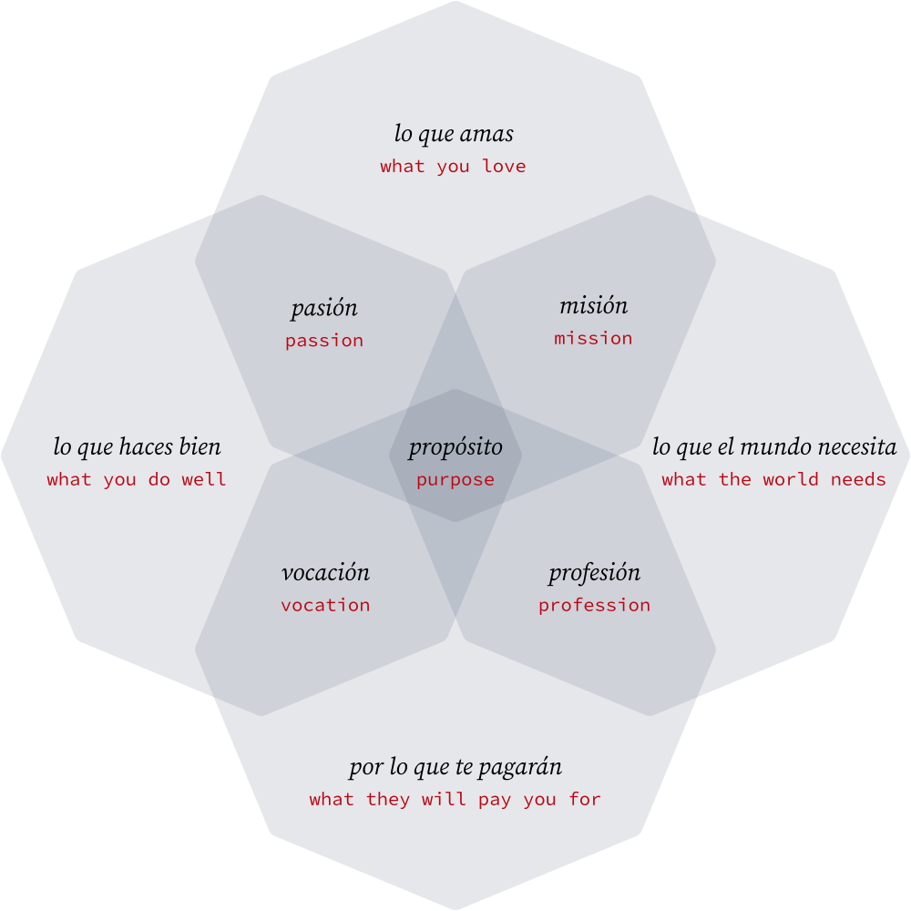

tilikagai
Years ago I came across this philosophy of "Ikagai" (or "reason for life") in [a blog post][marc winn's blog post], along with an explanatory four-axis venn-diagram1. It introduced the concept of honing in on a life's purpose by way of doing what you're good at, what you enjoy, what the world needs, and what you can be paid for. This really resonated with me.
I find this model a helpful tool in thinking about my own career, but it's important to remember that it's just that: a model. While I like the framework, as I've read more about Ikagai I also have some real concerns with it:
-
It's mired in the pseudo-science of "self help" that I'm really suspicious of. Most books out there frame Ikagai as an elusive thing that you need to start searching for, won't find happiness without, and need coaching to achieve.
-
It feels like yet another foreign cultural fetishization. Ikagai is a Japanese concept but nearly all material written on it is English.
-
The origins of Ikagai's introduction to English readers is via a TED talk on the unusual lives of centenarians on Okinawa Island which don't seem to relate to the venn-diagram, where did that come from?
These concerns turn out to be somewhat valid. In fact the origin of this venn-diagram concept is not Japanese at all, but instead comes from a book by Spanish Astrologist, Andrés Zuzunaga. [Marc Winn's blog post] combined this graphic with the idea of Ikagai presented in Dan Buettner's TED talk and voilà.
Despite it's shortcomings and misappropriation I still really like this mental model for considering career progression and debugging gaps in a sense of fulfillment. Here's my translation of Andrés Zuzunaga's original graphic in English:

Ikagai is still a very real concept, just not the same one as presented by most of these blog posts and books. Japanese neuroscientist Ken Mogi (who has also written a book on Ikagai) has a video addressing the venn-diagram and attempting to reclaim the term back to its original intent.
-
Years later, Mark wrote a follow up post on the origins of his article on Ikagai and addressed how it took on a life of its own.
↩